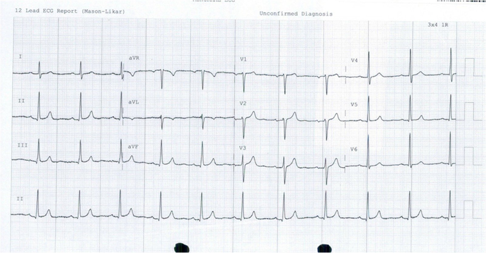
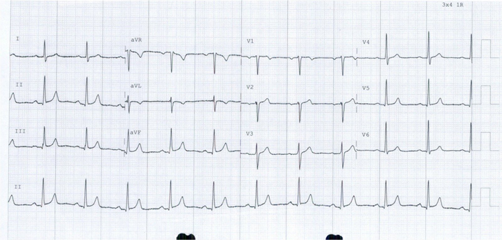
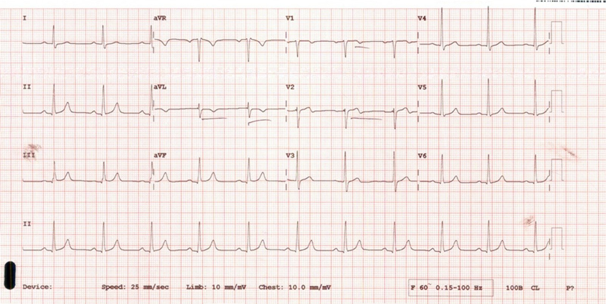
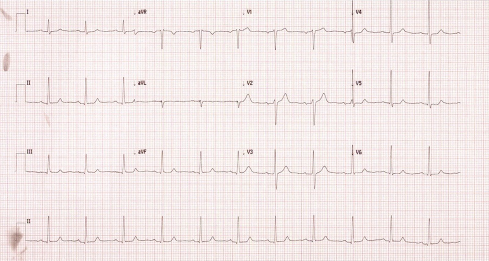
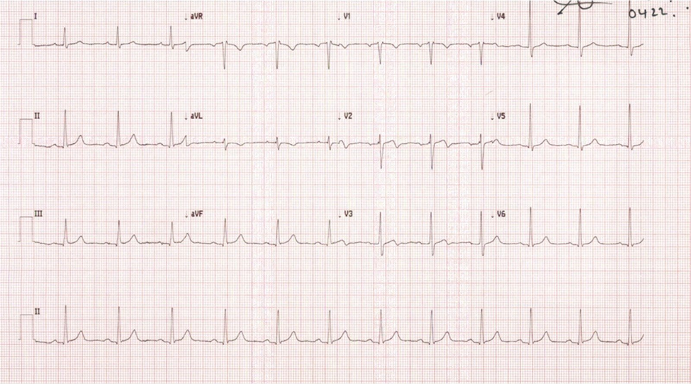
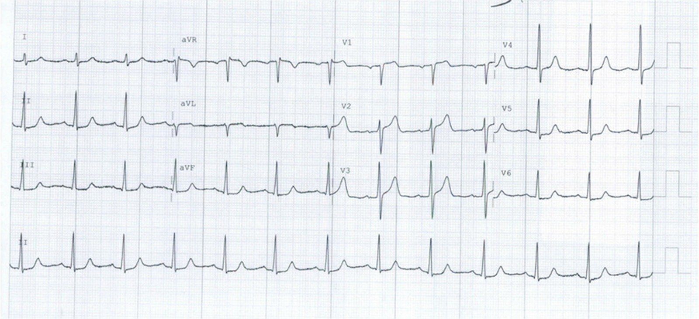
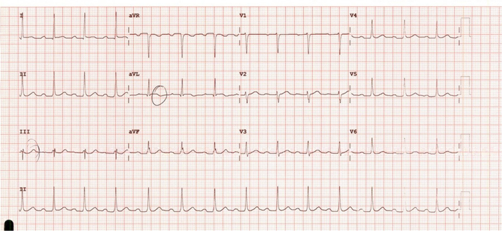
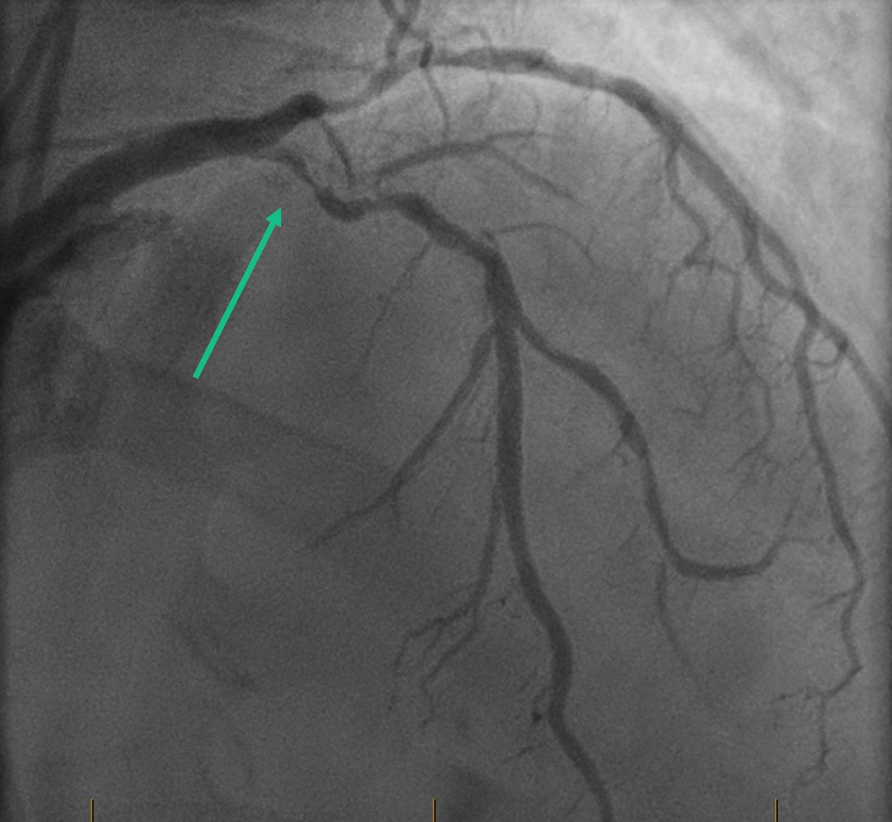
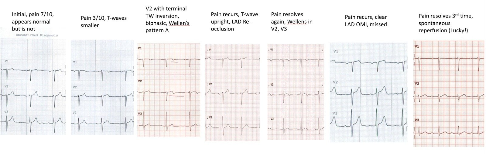
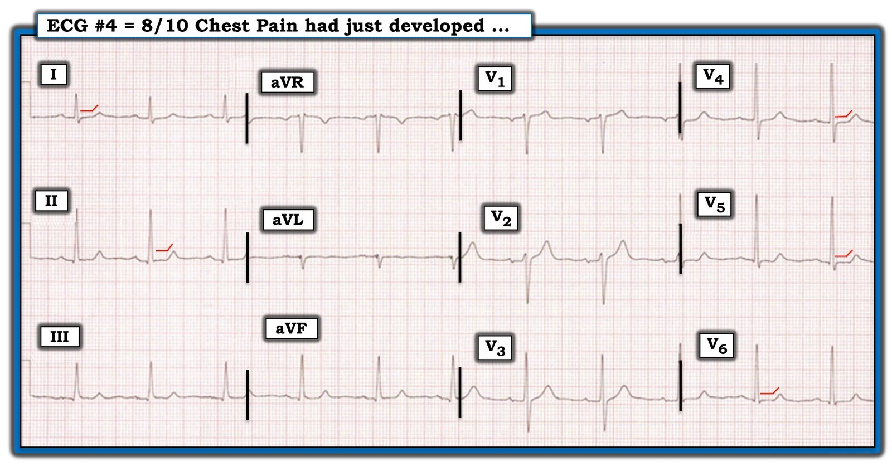

29/06/2022 — Khi “bình thường” chỉ là giả bình thường, nó có thể đánh lừa người điều trị.
Bản dịch tiếng Việt của bài "When Normal is only Pseudo-Normal, it can deceive the caregivers." – Dr. Smith’s ECG Blog. Giữ nguyên toàn bộ 11 hình ảnh của bản gốc.
Một người bạn người Úc ở tận “miền dưới đáy địa cầu” (down under) đã gửi cho tôi ca này.
Một bệnh nhân nam 70 mấy tuổi đến viện vì đau nhói như dao đâm ở giữa ngực. Đây là điện tâm đồ ban đầu khi đau ngực mức 7/10:


Bình thường
Cơn đau đang giảm dần, và một điện tâm đồ khác được ghi khi đau ngực mức 3/10:


Bình thường, nhưng so với điện tâm đồ đầu tiên, sóng T ở V2 và V3 không còn cao bằng. Hmm…….
Cơn đau đã hết hoàn toàn:


Bạn nghĩ sao?
Giờ đây có sóng T đảo ngược phần cuối ở V2, gần như đủ để chẩn đoán. Đây là hình ảnh Wellens rất kín đáo.
Sau đó bệnh nhân lại đau ngực kiểu dao đâm mức 8/10:


Sóng T ở V2 lại dương, cho thấy LAD đã tắc lại. Sóng T đảo ngược ở aVL cũng ít hơn, nên nhiều khả năng đây là LAD đoạn gần. Cũng có những bất thường ST-T kín đáo ở III, V5 và V6.
Đây là “giả bình thường hóa” (Pseudonormalization) vì trông có vẻ bình thường nhưng thực ra không phải!!
Bệnh nhân lại hết đau:


Giờ đây có sóng Wellens kiểu A rõ ràng, không còn mơ hồ (sóng T đảo ngược phần cuối, hai pha lên-xuống) ở V2 và V3. Sóng T ở aVL lại sâu hơn
Đây là diễn biến troponin I độ nhạy cao (giới hạn trên tham chiếu (URL) bách phân vị 99% = 20 ng/L):
0852 8
1215 10
1730 8
2030 12
0535 12
Bệnh nhân lại đau ngực vào thời điểm 24 giờ sau khi đến viện:


Nếu xét riêng, điện tâm đồ này trông gần như hoàn toàn bình thường (với những ai tinh mắt, có ST chênh xuống bất thường do thiếu máu cục bộ ở các chuyển đạo dưới và các chuyển đạo trước tim bên. Tuy nhiên, so với tất cả các điện tâm đồ trước, sóng T giờ đã dương, và ST chênh lên nhiều hơn hẳn so với bất kỳ điện tâm đồ nào trước đó.
Vậy là: LẠI giả bình thường hóa!
Lại tắc lại một lần nữa. Tôi cho rằng tình trạng này đã không được nhận ra là tắc lại, vì người ta đo thêm một lần troponin, kết quả trả về là 30 ng/L (giờ đã tăng).
Sau đó điện tâm đồ này được ghi lúc 26 giờ, khi chưa có bất kỳ can thiệp nào:


ST chênh lên đã hồi phục. Sóng T giờ đã bình thường. Có sóng đảo ngược kiểu Wellens ở aVL.
May mắn là LAD đã tự tái tưới máu. Nếu không, sẽ mất đi rất nhiều cơ tim.
Đây là phim chụp mạch vành:


LAD đoạn gần có mảng xơ vữa loét gây hẹp 90% và dòng chảy TIMI II-III.
Đã can thiệp PCI thành công.


Những điểm cần học
1. Wellens là tình trạng tái tưới máu của OMI
2. Động mạch có huyết khối “nóng”, có thể lan rộng và/hoặc tự tan, lặp đi lặp lại nhiều lần.
3. Đây thực sự là một STEMI thoáng qua (đúng hơn: OMI thoáng qua, vì nó không bao giờ đạt tiêu chuẩn STEMI!)
4. Wellens hàm ý có một lượng cơ tim bị mất (nhồi máu) nào đó (đôi khi rất nhỏ) và do đó có một thay đổi nào đó về troponin. Trong ca này, troponin quả thực đã tăng 4 ng/L, đây là mức tăng có ý nghĩa (tức là không phải do biến thiên tự nhiên hay sai số của phòng xét nghiệm), nhưng KHÔNG tăng vượt bách phân vị thứ 99, nên đây là đau thắt ngực không ổn định, cho đến lần tắc lại về sau, khi đó troponin ĐÃ tăng vượt bách phân vị thứ 99 và đây là nhồi máu cơ tim típ I.
5. Lần tắc lại đã bị bỏ sót vì điện tâm đồ trông gần như bình thường trong lúc LAD bị tắc. Manh mối tốt nhất cho thấy động mạch bị tắc là xem thật kỹ để tìm những thay đổi RẤT ĐẶC HIỆU (một số thay đổi trên điện tâm đồ không đặc hiệu, nhưng hình thái này rất đặc hiệu!)
6. Tối ưu nhất là bệnh nhân có Wellens được chụp mạch vành ngay, vì huyết khối “nóng” đó là một STEMI thoáng qua. STEMI thoáng qua thường phải vào phòng thông tim (cath lab) giữa đêm nếu không được đưa vào ngay
Xem bài này:
Timing of revascularization in patients with transient STEMI: a randomized clinical trial (Thời điểm tái thông mạch ở bệnh nhân STEMI thoáng qua: một thử nghiệm lâm sàng ngẫu nhiên)
7. Nếu không đưa bệnh nhân đi chụp ngay, họ cần được theo dõi đoạn ST liên tục bằng 12 chuyển đạo.
Xem các bài này:
Why we need continuous 12-lead ST segment monitoring in Wellens’ syndrome (Vì sao cần theo dõi liên tục đoạn ST trên đủ mười hai chuyển đạo trong hội chứng Wellens)
Wellens’ syndrome, no culprit, what happened? (Hội chứng Wellens, không có tổn thương thủ phạm, chuyện gì đã xảy ra?)

===================================
Bình luận của KEN GRAUER, MD (29/6/2022):
===================================
Ca minh họa do bác sĩ Smith trình bày, một lần nữa nhấn mạnh các khái niệm quan trọng sau:
- Rằng một phần định nghĩa của Hội chứng Wellens đòi hỏi bệnh sử bệnh nhân đã từng đau ngực — và cơn đau nay đã hết!
- Rằng có cả một phổ thay đổi điện tâm đồ có thể gặp trong hội chứng Wellens — bao gồm cả những dấu hiệu cực kỳ kín đáo (như minh chứng là sóng T đảo ngược phần cuối ở chuyển đạo V2 trên điện tâm đồ thứ 3 ở trên). Dấu hiệu này đã có thể quá dễ dàng bị bỏ qua nếu người thầy thuốc không kết hợp bệnh sử với sự xuất hiện mới của sóng T đảo ngược phần cuối này vào đúng lúc cơn đau ngực của bệnh nhân đã hết hoàn toàn!
- Những ca kín đáo như ca được trình bày hôm nay “kể một câu chuyện” — câu chuyện có thể chỉ trở nên rõ ràng thông qua đối chiếu lâm sàng tuần tự các bản ghi liên tiếp — trong đó thời điểm ghi các điện tâm đồ — sự hiện diện và mức độ nặng tương đối của triệu chứng — các giá trị troponin liên tiếp (và siêu âm tim tại giường nếu có làm) — tất cả đều được tích hợp với nhau.
- Hiểu được mọi phần của câu chuyện sẽ giải thích vì sao những khái niệm như “giả bình thường hóa” của điện tâm đồ — và tắc lại của mạch “thủ phạm” — có thể dễ dàng bị bỏ qua.
Chúng tôi đã nhiều lần nhấn mạnh tầm quan trọng của việc so sánh điện tâm đồ liên tiếp trên Dr. Smith’s ECG Blog. Để tham khảo — tôi chỉ dẫn ra 3 bài mà trong đó tôi tập trung vào “nghệ thuật” so sánh điện tâm đồ liên tiếp trong phần Bình luận của tôi ( = bài ngày 15 tháng Mười Một năm 2018 — bài ngày 28 tháng Sáu năm 2018, trong đó bác sĩ Smith đã phân tích diễn tiến của một ca hội chứng Wellens khác — và bài ngày 20 tháng Tám năm 2020).
- Để cho rõ ràng — tôi muốn chỉ tập trung vào 1 trong 7 bản ghi được trình bày hôm nay — đó là điện tâm đồ thứ 4 được ghi (Hình 1). Như bác sĩ Smith đã bàn ở trên — bản ghi thứ 4 này được ghi khi cơn đau ngực tái phát (được bệnh nhân mô tả là “8/10 và như dao đâm”). Nếu không so sánh điện tâm đồ liên tiếp một cách cẩn thận với 3 bản ghi trước đó — ý nghĩa lâm sàng của các dấu hiệu trên điện tâm đồ thứ 4 này có thể dễ dàng bị bỏ qua!
- Việc các triệu chứng đau ngực của bệnh nhân quay trở lại (thậm chí còn nặng hơn trước) — đi kèm với một yếu tố “giả bình thường hóa” (tức là sóng T đảo ngược phần cuối “tố cáo” ở chuyển đạo V2 đã được thay bằng một sóng T dương) — trong bối cảnh này là đủ để chẩn đoán tắc lại LAD đoạn gần.
Điểm khác cần nhấn mạnh về điện tâm đồ trong Hình 1 — là đây không phải là một bản ghi bình thường.
- Mặc dù ST chênh xuống chỉ ở mức tối thiểu — nhưng vẫn có hiện tượng đoạn ST dẹt rõ ràng — kèm một góc gập đột ngột tại chỗ nối giữa đoạn ST dẹt với sóng T theo sau (các đường MÀU ĐỎ ở chuyển đạo I,II; V4,V5,V6 trong Hình 1). Đây không phải là sóng ST-T bình thường.
- Đoạn ST dẹt và góc gập tại chỗ nối với sóng T này có ý nghĩa gì — lại là chuyện khác. Còn tùy. Tôi đã gặp những sóng ST-T tương tự không biết bao nhiêu lần trong hàng nghìn điện tâm đồ chăm sóc ban đầu mà tôi đã đọc trong những năm trước. Tự bản thân nó — đây hoàn toàn chỉ là một dấu hiệu không đặc hiệu, đôi khi có thể là dấu hiệu kín đáo của bệnh mạch vành tiềm ẩn — nhưng những lúc khác có thể không có ý nghĩa lâm sàng nào.
- Dù vậy — trong bối cảnh các bản ghi liên tiếp của ca hôm nay — hiện tượng ST dẹt và góc gập đột ngột này rõ ràng đã tăng lên ở điện tâm đồ #4 so với 3 điện tâm đồ trước đó trong ca hôm nay. Cùng với việc mất sóng T đảo ngược phần cuối ở chuyển đạo V2 của điện tâm đồ #3 — điều này khiến cho càng nhiều chuyển đạo trên điện tâm đồ #4 cho thấy thay đổi sóng ST-T “động” dù có vẻ như đã “giả bình thường hóa”.

